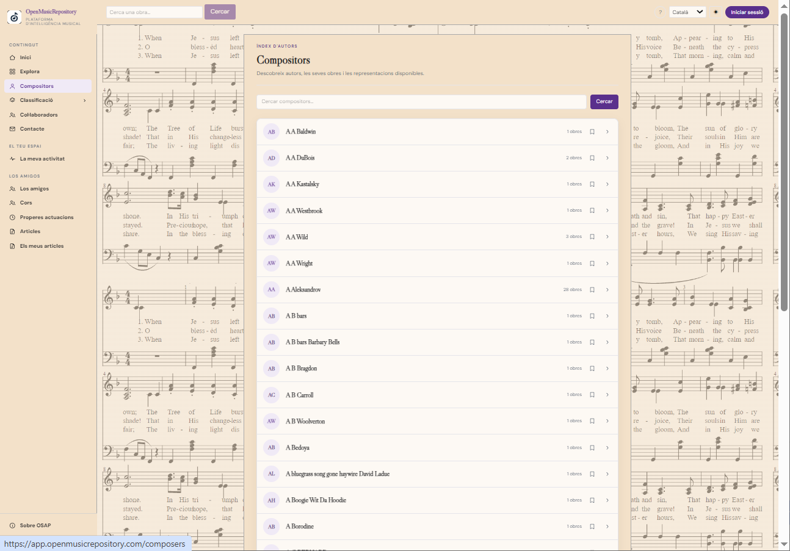
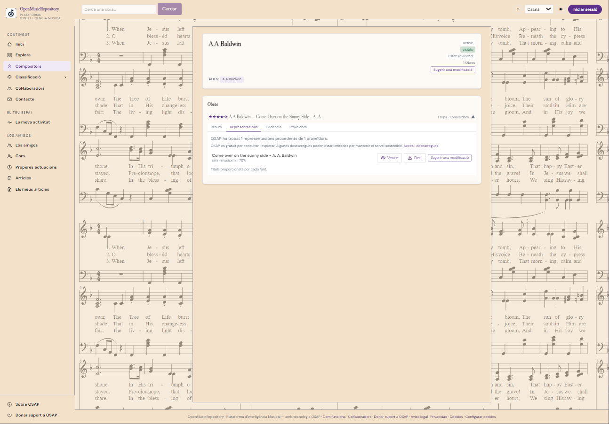

Werk
Gemeinsame musikalische Identität: Titel, zugeschriebene Urheberschaft und Katalogdaten.
Benutzerhandbuch
Erfahren Sie, wie Sie Werkdatensätze, Werkdarstellungen sowie Angaben zu Urhebern und Klassifikationen interpretieren.
Ein Werk ist die musikalische Einheit, die identifiziert werden soll. Eine Darstellung ist eine bestimmte Ausgabe, Bearbeitung, Partitur oder Version, die eine Quelle diesem Werk zuordnet. Ein Werk kann mehrere Darstellungen haben, die jeweils ein anderes Format anbieten.
Gemeinsame musikalische Identität: Titel, zugeschriebene Urheberschaft und Katalogdaten.
Eine bestimmte Version oder Ausgabe mit ursprünglichem Titel, Anbieter und Format.
Eine Datei oder ein Link zu einer Darstellung, sofern die Quelle ihn bereitstellt.
Der Datensatz bündelt Informationen, die OSAP aus verschiedenen Quellen verknüpfen konnte. Je nach Datensatz finden Sie:
Nutzen Sie die verfügbaren Aktionen, um eine Partitur anzusehen, eine Ressource – sofern erlaubt – herunterzuladen oder die Originalquelle zu öffnen. Manche Aktionen funktionieren nur, wenn der Anbieter erreichbar und die Ressource zugänglich ist.


Im Komponistenverzeichnis kann nach Namen gesucht werden. Ein Profil kann Biografie, wichtige Werke, Referenzen, Aliase und Identitätsnachweise enthalten. Nicht alle Felder sind für jede Person verfügbar.
Wenn zwei Profile offenbar dieselbe Person betreffen oder eindeutig falsche Angaben enthalten, melden Sie den Fall über Kontakt und Korrekturen. Zusammenführungs- und Wartungsfunktionen sind Administratoren vorbehalten.
Das Menü Klassifikation fasst die Kriterien zusammen, die OSAP zur Klassifizierung von Werken verwendet. Jeder Abschnitt hat ein eigenes Verzeichnis und wird mit Beispielen auf der Seite zur musikalischen Klassifikation.
Die Klassifikation spiegelt die verfügbaren Kataloginformationen wider; Werke können unkategorisiert sein, unvollständige Daten enthalten oder eine Überprüfung erfordern.
Wenn OSAP mehrere passende Werke findet, können Kandidaten angezeigt werden. Vergleichen Sie Titel, Urheber, Katalog, Anbieter und Belege. Gehen Sie nicht davon aus, dass zwei Ergebnisse identisch sind, nur weil ihre Titel einige Wörter gemeinsam haben.